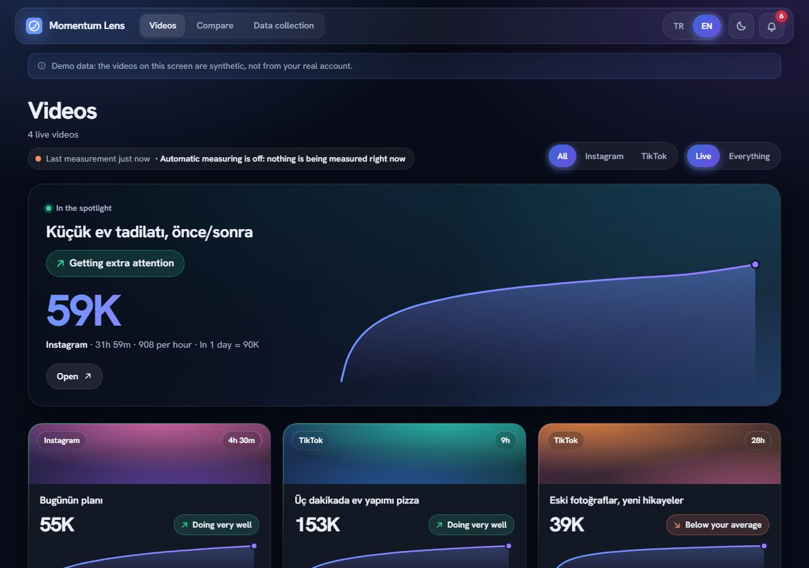
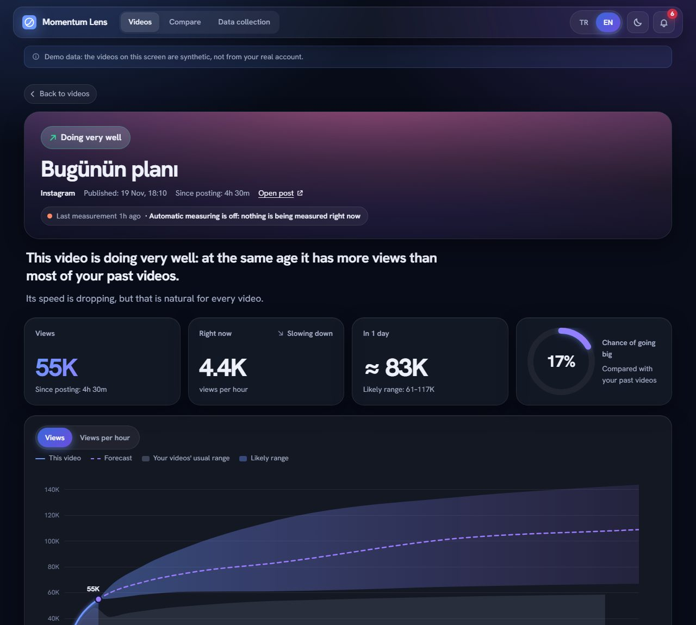

Momentum Lens
See how fast your videos are growing, and where they are likely to end up.
Türkçe: Videolarının ne kadar hızlı büyüdüğünü ve nereye ulaşacağını gör. Türkçe özet sayfanın altında.

What it does
Momentum Lens is a desktop analytics tool for individual creators. After you connect your own account, it reads the counters of your own videos (views, likes, comments, shares) at regular intervals and keeps them on your computer. From that history it works out, with plain statistics and no machine learning:
View speed
How many views per hour a video is getting right now, over the last 15, 30 and 60 minutes.
Momentum
Whether a video is speeding up or slowing down, and whether that is normal for a video of that age.
Comparison
How a video compares with your own earlier videos at the same age.
Forecast
Expected views after 1, 6, 12, 24, 48 and 72 hours, always with a likely range, never a single promise.
Unusual changes
A notice when a video suddenly gets extra reach or is held back, so you can look into it.
Your language
The whole panel is available in English and Turkish.

How it works
- You connect your own account through the platform's official login. The app only asks to read.
- The app lists your videos and reads their counters, quickly for new videos and less often for older ones, using the platform's official API only.
- Everything is calculated and shown on your own computer, in a local panel that only your computer can open.
Data and permissions
| Platform | Access | Used for |
|---|---|---|
| Instagram Instagram API | Your own Reels and their insights counters | Views and engagement counters over time |
| TikTok Login Kit + Display API |
user.info.basicvideo.list |
user.info.basic: show which account is connected.video.list: list your own videos and read their public counters. |
- Only your own account is read. The app never posts, edits or deletes anything, and never contacts your followers.
- Data is stored only on the computer that runs the app. It is never sold, shared or used for advertising.
- Access tokens are stored encrypted on that computer and are never shown or logged.
- You can disconnect at any time and ask for all stored data to be deleted (see the Privacy Policy).
Who makes it
Momentum Lens is a personal project by Ali Naki YILDIRIM (İzmir, Türkiye). Questions, data requests and feedback: aliydrm15@gmail.com.
Momentum Lens is not affiliated with, endorsed by, or sponsored by Instagram, Meta Platforms or TikTok.
Türkçe özet
Momentum Lens, içerik üreticileri için bir masaüstü analiz aracıdır. Kendi hesabını resmî giriş ekranı üzerinden bağladıktan sonra kendi videolarının sayaçlarını (izlenme, beğeni, yorum, paylaşım) düzenli aralıklarla okur ve yalnızca senin bilgisayarında saklar. Bu geçmişten, makine öğrenmesi olmadan yalnızca istatistikle şunları gösterir: saatlik izlenme hızı, videonun hızlanıp yavaşlaması, önceki videolarınla kıyas, aralıklı izlenme tahmini ve olağandışı değişiklik bildirimi.
TikTok için yalnızca iki izin kullanılır: user.info.basic (hangi hesabın bağlı olduğunu göstermek) ve video.list
(kendi videolarını listelemek ve sayaçlarını okumak). Uygulama içerik paylaşmaz, değiştirmez veya silmez; veriler satılmaz ve paylaşılmaz.
İstediğin zaman bağlantıyı kesip tüm verilerin silinmesini isteyebilirsin. İletişim: aliydrm15@gmail.com